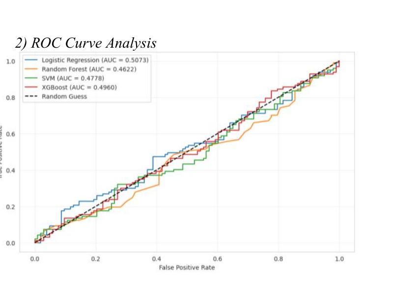

XGBoost · 0.9610
The strongest AUC-ROC suggests the model was best at separating positive and negative cases across thresholds.
Human-centered AI · Mental-health technology
A multimodal machine-learning framework that studies how academic, lifestyle, and psychological signals can support earlier recognition of adolescent mental-health risk.
The study addresses a practical problem: self-reports can be delayed, incomplete, or affected by bias, while changes in sleep, study load, academic pressure, and emotional well-being may appear together across daily life.
It frames prediction as a way to support timely human attention, not as a replacement for clinical judgment. The proposed system is a research framework and should not be used as a diagnostic tool.
| Model | Accuracy | Precision | Recall | F1-score | AUC-ROC |
|---|---|---|---|---|---|
| Logistic regression | 0.8550 | 0.9149 | 0.8037 | 0.8557 | 0.9218 |
| Random forest | 0.8375 | 0.8461 | 0.8831 | 0.8642 | 0.9116 |
| SVM | 0.8429 | 0.8507 | 0.8874 | 0.8687 | 0.9103 |
| XGBoost | 0.8319 | 0.8314 | 0.8319 | 0.8315 | 0.9610 |
The strongest AUC-ROC suggests the model was best at separating positive and negative cases across thresholds.
It reached the highest accuracy and precision in the reported comparison, making it a useful interpretable baseline.
SVM reported the highest recall and F1-score, highlighting a different trade-off for identifying possible positive cases.
The paper identifies academic pressure as the most important feature in the XGBoost analysis. Shorter sleep and longer study hours also appeared as meaningful signals, connecting the model's output to practical intervention questions in educational settings.
The study also reports weaker performance for extreme sleep-duration groups and notes that privacy, sampling bias, and demographic diversity remain important limitations before real-world deployment.

